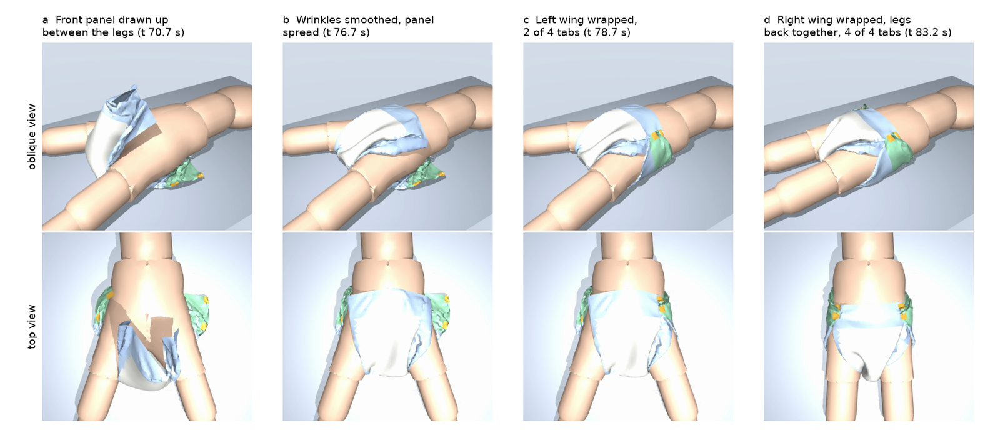
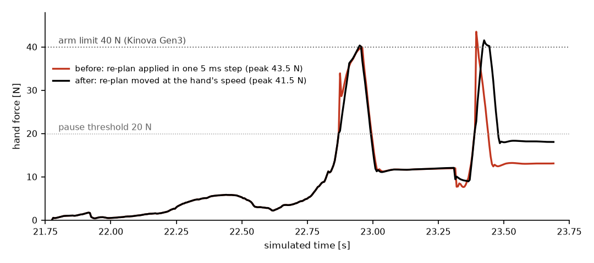
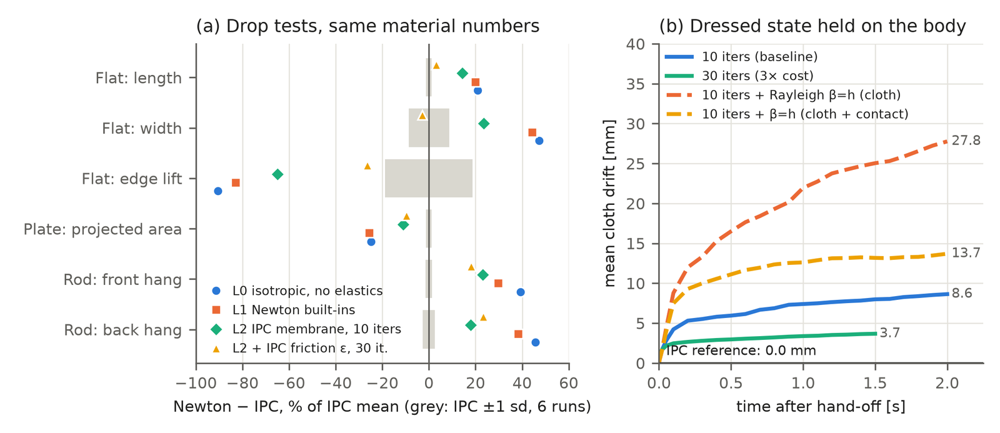

Assistive robotics · simulation only · work in progress, no manuscript
Changing an adult diaper is one of the most frequent and physically demanding jobs in long-term care, and our literature search (November 2026) found no robot study of it. I built a simulation in which a deformable older-adult pelvis and thighs, a skeleton, a foam mattress, a tape-type adult brief and two force-gated hands share one contact model where nothing can pass through anything else. In one reference run the two hands fasten all four tabs at a peak hand force of 28.5 N, and a second run reproduces it bit for bit. Two fit measures still fail, the result rests on one run, and nothing has been checked against a physical diaper yet.
Mu-Hua Wang · independent · sole developer
Drag the slider to step through the reference dressing run (internal label chg6vhpd), simulated time 69.8–83.2 s; left oblique view, right top view; the hands are not drawn. The curves are the forces on the six force-gated hands (thin lines), the dotted line the 20 N pause threshold, the red line the 40 N limit. One run, not a statistic: it is the only run that meets all of the platform’s own validity rules.
A run counts as valid only if all four tabs are fastened and stay fastened, no force gate fails, no hand stays above the 40 N limit, no extra hand is used, and a rerun with the same settings gives the same result. These rules were written before the run. The reference run meets all of them.
one run, two hands, at the end of the sequence
highest of all hands and stages; limit 40 N
two independent runs, single-threaded

Key frames of the same run: (a) front panel drawn up, (b) smoothed, (c) left wing wrapped, 2 of 4 tabs, (d) right wing wrapped and legs closed, 4 of 4 tabs.
| Fit measure at the end of the run | Pass range | Value |
|---|---|---|
| Tabs fastened | 4 | 4 |
| Absorbent core short of covering the anus | 0–30 mm | 34.87 mm (fails) |
| Front waist edge relative to the waist line | ±50 mm | −114.28 mm (fails) |
A second sample, in which the dressing follows a simulated diaper change, also fastens 4 of 4 tabs, but its front-panel stage fails and its waist edge ends at −141.3 mm. Robustness therefore rests on one run.
Changing the diaper means turning the person on their side, rolling the soiled brief under the body, laying the new one, turning back and pulling the old one out. The whole sequence runs end to end, but pulling the old brief out passed the force gate in only 2 of 5 runs. Tracing the failures back led here: after the hand squeezes the soiled brief under the body and opens, its back wing jumps out again, and when the person is turned it ends up pinned under the lower hip.
Cross-section, 5× slower than simulated time. Red: the soiled brief’s back wing; open red circles: where it was at the furthest push. After the hand opens, the wing ends 123 mm from that position and 67 mm above the mattress. One run (internal label mono12), not a statistic.
A prediction that failed: real nonwoven fabric keeps a crease, so I added bend plasticity to the brief and replayed the push through it beforehand; that check said the wing would stay. Run for real, it still sprang back 123 mm. Rather than tune the plasticity until it stays, the question now waits for a bending-recovery measurement on a real brief.
Everything is solved together with Incremental Potential Contact (IPC), a barrier method that keeps every pair of surfaces apart, using implicit Euler steps of 5 ms. The soft tissue is a hyperelastic (Ogden) tetrahedral mesh coupled to a MuJoCo skeleton. The brief has direction-dependent stretch, bending, tension-only elastics, bend plasticity and adhesive tabs, with parameters taken from published sources. Each hand grips cloth through springs and is run by a force gate: it advances below 20 N, pauses and re-plans between 20 and 40 N, and backs off at 40 N. The steps follow Taiwanese nursing textbooks.
This accuracy is slow: the dressing sequence, 13.5 simulated seconds, takes 12.0 hours on one CPU thread, and the diaper change, 21.7 simulated seconds, 16.2 hours. The platform is therefore meant as a reference against which a fast simulator can be checked, not as a place to train a robot.
The 40 N gate matches the end-effector force limit of the arm the platform targets (Kinova Gen3). A kinematic and static-torque check found that a two-arm layout reaches every hand target from 69 of 90 base positions, using at most 0.52 of rated joint torque. One step did not fit: the hand that folds the soiled brief peaked at 43.5 N. Stepping through its force record showed the jump came one 5 ms step after the hand paused, when the re-planned target was applied all at once — a move no arm can make.

Force on the folding hand, one run each. Red: re-planned target applied in one step (peak 43.5 N). Black: target moved at the hand’s own speed (peak 41.5 N). The jump is gone, but the hand still reaches the limit where it pushes the edge under the body, so the fix alone does not bring this step under 40 N.
To train a robot later, a GPU simulator (Newton) is needed. The same cloth equations were written into it and compared with the reference, first in drop tests against the spread of six repeated reference runs, then by handing the dressed state from the reference run over to Newton and letting it rest.

(a) Drop tests: error relative to the reference mean; grey band = reference ±1 standard deviation over 6 runs. (b) Mean drift of the dressed brief after hand-off to Newton; the reference stays at 0.0 mm. Each Newton value is one run.
| Measure | Reference | Newton |
|---|---|---|
| Plate drape, projected area | 0.1297 ± 0.0016 m² | −10 % |
| Flat drop, length | 662 ± 8 mm | +3 % |
| Rod drape, back hang | 313 ± 8 mm | +23 % (outside tolerance) |
| Dressed brief, mean drift after 2 s | 0.00 mm | 8.64 mm |
| Same, 3× the solver iterations, after 1.5 s | — | 3.68 mm |
Another prediction that failed: adding damping equal to the reference’s numerical damping was expected to halve the drift. It made it worse (27.77 mm and 13.70 mm after 2 s, against 8.64 mm without), because in Newton’s vertex-by-vertex solver the extra term slows convergence at a fixed iteration count. The reference’s 0.00 mm is partly due to its own stopping rule, not only physics.
Scope: simulation only; one body model and one brief; the valid dressing result is one run (a second sample fails one stage); two fit measures fail; pulling the old brief out fails in 3 of 5 runs; one step still needs more than the arm’s 40 N; nothing has been validated against a physical diaper or a person.
The force-gate thresholds and some material values are estimates, not measurements. Hand motions are faster than a person’s (13.5 simulated seconds for the whole dressing), which inflates some forces. Bit-for-bit reproducibility holds only with single-threaded solvers. The GPU comparison ran on a CPU; GPU speed has not been measured. Measurements on a real brief (flat dimensions, bending recovery) and physical checks (drape, wing pull, dressing a cylinder or manikin) are planned and not done. Most of the code was written with an AI coding assistant (Claude Code) under my direction; the study design, run criteria and decisions are mine.